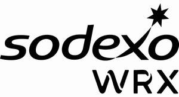

Trade Mark Journal No.2025/036 5 September 2025
UK00004247551 11 August 2025 (35,37,39,40,41,42,43,44,45)

International priority date claimed: 8 August 2025
(European Union Intellectual Property Office (EUIPO))
(019230190)
- Class 35
- Business management and organization consultancy; commercial or industrial company management assistance; company audits (commercial analyses); commercial business appraisal; providing commercial information via websites; community management services; consulting services relating to personnel management; employment agency services; personnel recruitment; company audits with respect to the quality of life of employees (human resources management); rental of food and beverage vending machines; rental of office equipment in co-work installations; market studies; establishing statistics; company efficiency expert services; organization of exhibitions for commercial or advertising purposes; outsourced administrative management of companies; computerized file management services; commercial intermediation services; commercial lobbying services; rental of office machines and equipment; updating and maintenance of data in computer databases; reception services for visitors (office functions); photocopying services; meeting scheduling services (office functions); switchboard services; secretarial services; data processing services (office functions); public relations; news clipping services; services for conducting business events; wholesale, semi-wholesale and retail sale services for cooked dishes and meal trays; wholesale, semi-wholesale and retail sale services for non-alcoholic beverages and alcoholic beverages; on-line ordering services in the field of restaurant take-out and delivery sales; administration of frequent flyer programs; company communication services; promotion of goods and services by means of sponsorship of sports events.
- Class 37
- Kitchen equipment installation; furnace installation and repair; air conditioning apparatus installation and repair; air-conditioning apparatus installation and repair; installation and repair of food and drink vending machines; installation and repair of refrigeration apparatus; heating equipment installation and repair; boiler cleaning and repair; installation and repair of electric apparatus; elevator installation and repair; maintenance of elevators by remote monitoring systems; burglar alarm installation and repair; fire alarm installation and repair; telephone installation and repair; office machine and equipment installation, maintenance and repair; installation and repair of computer hardware; burner maintenance and repair; installation and maintenance of gas and water installations; maintenance and repair of vaults; maintenance and repair of escalators; chimney sweeping; construction consultancy; construction work supervision [management]; roofing services; services provided by electricians; interior and exterior painting works; paper hanging; masonry; plastering; plumbing; laying of cables; repair of electric lines; interference suppression in electrical installations; furniture maintenance; repair of locks; installation and servicing of fire extinguishers; sharpening of knives; motor vehicle maintenance and repair; vehicle washing; vehicle cleaning; repair services in the case of vehicle breakdown; Provision of information regarding repair; housework services [cleaning services]; cleaning of buildings [interior]; cleaning of buildings [exterior surface]; window cleaning; disinfection; disinfecting of surgical instruments; sterilization of medical instruments; vermin extermination other than for agriculture, aquaculture, horticulture and forestry; pest control services, other than for agriculture, aquaculture, horticulture and forestry; laundering; washing of linen; laundering; dry cleaning; cleaning of clothing; clothing repair; linen ironing; shoe repair; rental of dish-washing machines; rental of dish-drying machines; rental of washing machines; rental of cleaning machines; advice to companies with respect to the layout of offices and work spaces [facilities]; laying of artificial turf; hardscaping services; snow removal.
- Class 39
- Transport; providing information with respect to transport; organization of cruises; organization of excursions; transport services for sightseeing tours; transport organization in the framework of sightseeing tours; booking of seats for travel; transport reservations; escorting of travelers; replenishment of food and drink vending machines; packaging and storage of merchandise; travel organization; boat transport; river transport; passenger transport; guarded transport of valuables; ambulance transport; chauffeur services; organization of passenger transport services for third parties via an online application; delivery of newspapers; mail delivery; franking of mail; water distribution; electricity distribution; distribution of energy; vehicle breakdown assistance (towing); unloading; refrigerator rental; rental of freezers; rental of electric wine cellars; garage rental; removal services; delivery of merchandise; flower delivery; parcel delivery; luggage deposit services; courier services [messages or merchandise]; wrapping of goods; rental of storage lockers; parking services; rental of parking spaces; vehicle rental; collection of recyclable products [transport]; collection of domestic and industrial trash and waste; cloakroom services; preparation of visas and travel documents for persons going abroad.
- Class 40
- Air deodorizing; air purification; air freshening; rental of air conditioning apparatus; rental of electricity generators; destruction of waste and trash; incineration of waste; recycling of trash and waste; waste treatment [transformation]; sorting of waste and recyclable material [transformation]; upcycling (waste recycling); production of energy; water treatment; freezing of foods; food and beverage preservation; pasteurization of drinks and food; food smoking; cheese processing services in the nature of ripening, maturing and aging of cheese; decontamination of hazardous materials; decontamination of medical instruments; clothing alteration; printing services; provision of information regarding treatment of materials.
- Class 41
- Services for conducting events [entertainment]; party planning [entertainment]; sporting activities; sports club services [health and fitness training]; sports camp services; organization of sports competitions; arranging and conducting of sporting events; provision of sports facilities.
- Class 42
- Software development [design]; software installation; development of computer platforms; computer system design; computer programming; computer system analysis; artificial intelligence advice; research in the field of artificial intelligence technology; advice with respect to the design and development of computer hardware; advice with respect to data security; advice with respect to Internet security; consultation regarding computer security; software consultancy; maintenance of computer software; updating of software; rental of computer software; computer rental; information technology consultancy services; interior design; advice regarding interior design; design of interior decor; Design regarding the layout of offices and work spaces; architectural services; architectural consultancy; energy auditing; advice with respect to energy saving; energy performance testing of buildings; quality control; conducting of technical project studies; surveying [engineering work]; environmental protection-related research; digitization of documents [scanning]; rental of web servers; electronic data storage; remote monitoring of computer systems.
- Class 43
- Services for providing food and beverages; restaurant services; catering services; bar services; cafeteria services; self-service restaurant services; café services; snack bar services; canteen services; take-away food and beverage services; home chef services; rental of meeting rooms; rental of chairs, tables, table linen and glassware; rental of cooking apparatus; rental of lighting apparatus; rental of drinking water dispensers; rental of tents; information and advice with respect to meal preparation; retirement home services; rental of portable cloakrooms.
- Class 44
- Medical services; dietary and nutritional advice; health counseling; auditing of the healthcare environment; health assessment services; providing evaluation of risks in the field of health; occupational health consultancy; nutritional studies; nutritional therapy; medical nutritional therapy; behavioral nutrition services; mental health services; medical assistance; advice relating to stress management; medical nursing services; home-visit nursing care; nursing home services; rehabilitation clinic services; rest home services; hospice services [care homes]; flower arranging; landscape architecture; landscape design; landscape gardening services; lawn maintenance services; gardening; vermin exterminating in agriculture, aquaculture, horticulture and forestry; weed killing; medical equipment rental; rental of sanitation facilities; beauty salon services; aesthetician services; hairdressing; barber shop services; manicuring; massage; spa services; sauna services; solarium services; health spa services; pet grooming.
- Class 45
- Legal services; audit services for legal compliance purposes; audit services for regulatory compliance purposes; concierge services; personal shopping for others; providing non-medical in-home care services for individuals; babysitting; escorting in society [chaperoning]; night guard services; security guard services; security guarding of facilities via remote monitoring systems; monitoring of burglar alarms; medical alarm monitoring; personal body guarding; advice with respect to physical security; occupational safety consultancy; online social networking services; rental of fire extinguishers; rental of fire alarms; fire-fighting; rental of safes; clothing rental; rental of evening wear; planning and arranging of wedding ceremonies; pet sitting.
Sodexo
Representative: Boult Wade Tennant LLP